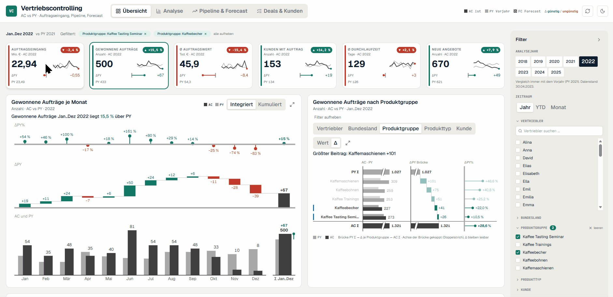
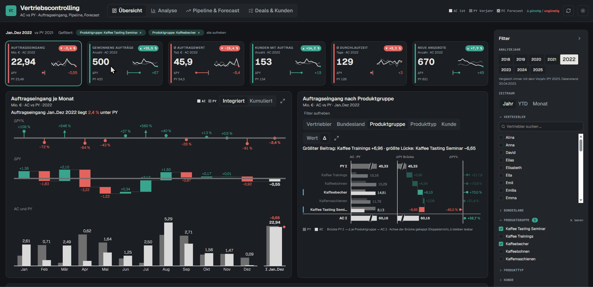
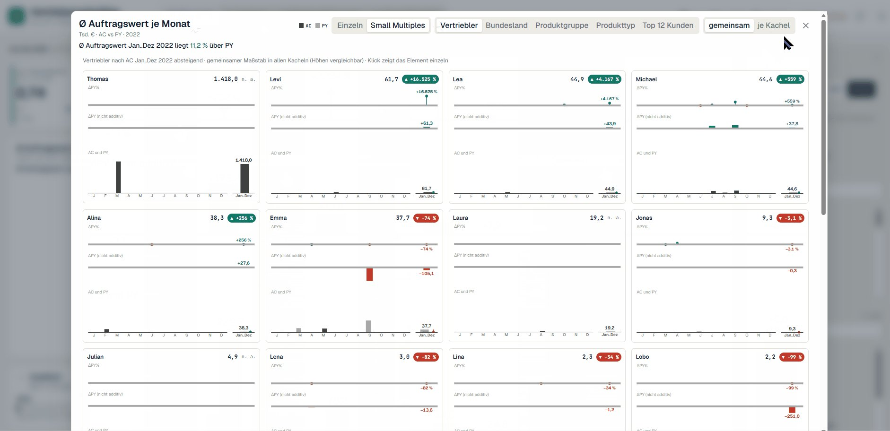
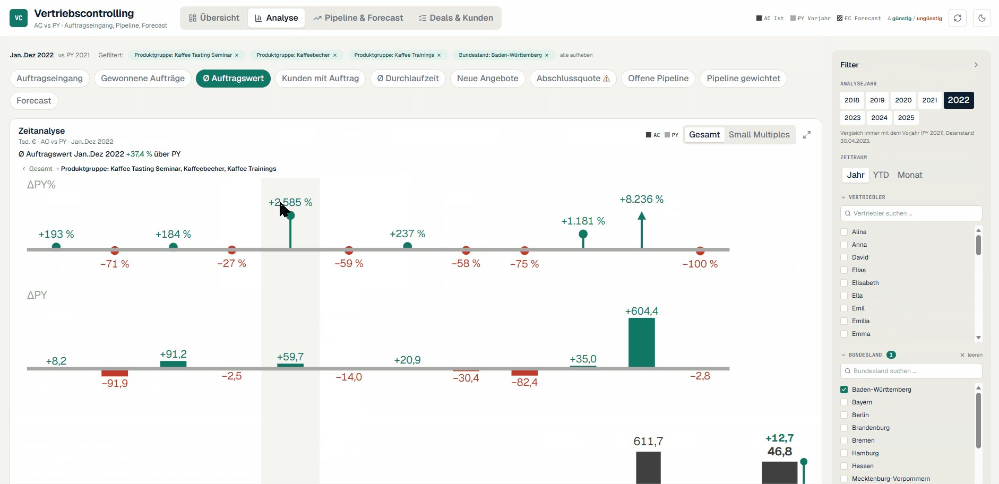
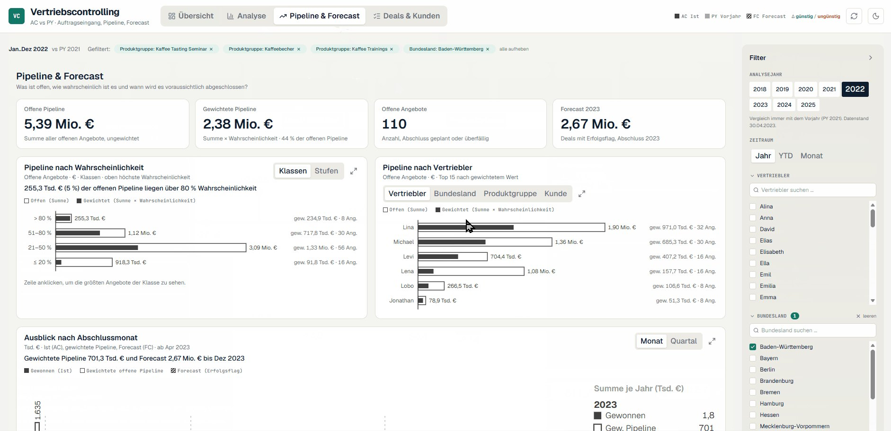
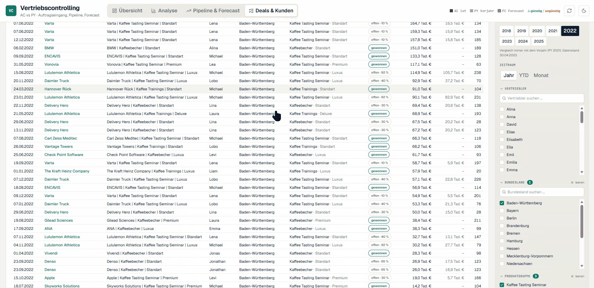
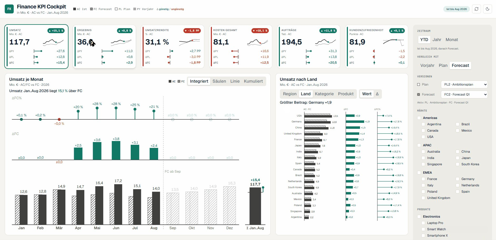
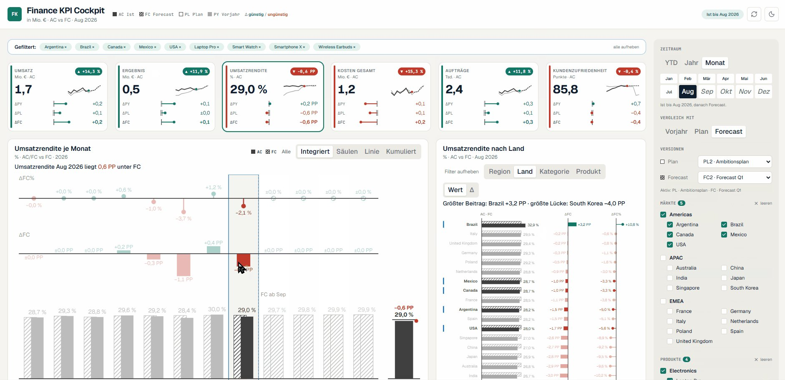
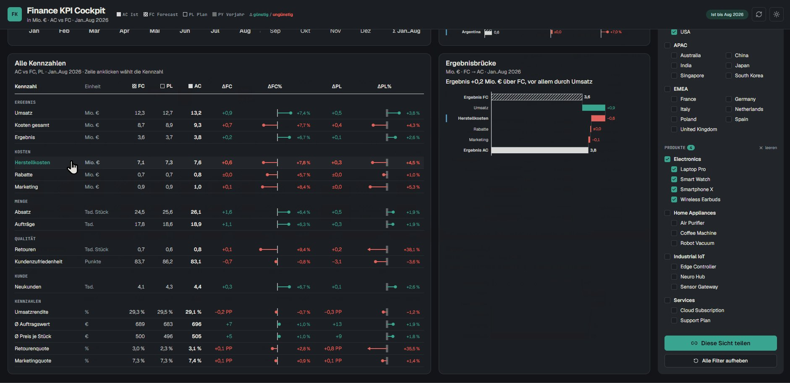
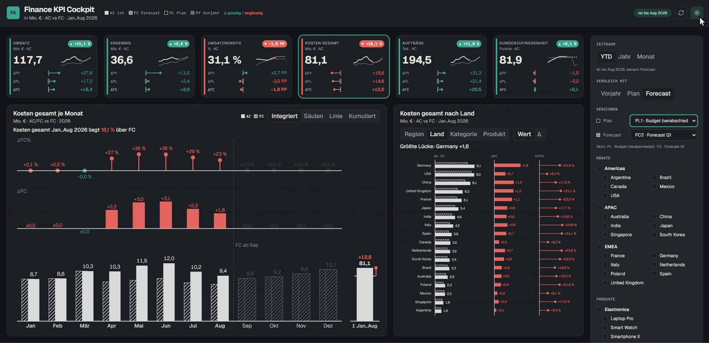

Fabric Apps sind jetzt in unserer Fabric-Umgebung verfügbar, also haben wir angefangen zu testen. Ich habe viele großartige, fancy, super coole Apps gesehen. Dann kam die Idee: Warum nicht etwas bauen, das viele wirklich brauchen? Vertriebscontrolling und Finance Reporting, das klassische Heimrevier von Power-BI-Berichten. Mit klaren Standards statt Show.
Fabric Apps sind ein neuer Item-Typ in Microsoft Fabric, aktuell in der Preview. Microsoft hat sie zur Build 2026 zusammen mit Rayfin vorgestellt, einem Open-Source-SDK und einer CLI. Man schreibt eine Web-App in TypeScript und React, verbindet sie über Konnektoren mit Fabric-Daten und deployt sie mit rayfin up in einen Workspace. Angemeldet wird über Fabric SSO, und jeder sieht nur die Daten, auf die er auch im Modell Zugriff hat.
Für Reporting ist vor allem der Konnektor auf das Semantikmodell interessant. Die App schickt DAX-Abfragen über die Execute-Queries-API an das bestehende Modell. Das Modell bleibt die Datenquelle, die App übernimmt die Darstellung und die Interaktion.
rayfin up machtZwei Apps im selben Workspace, beide auf einem bestehenden Semantikmodell. Jede ist in etwa einer Stunde entstanden.










Was mir besonders gefällt: die Filter über der Seite, gut sichtbar und mit einem Klick gelöscht. Der Zoom mit neuen Aktionen. Und das „Beste": der einfache Wechsel in den Dark Mode. Das hätte ich in Power BI nie gebaut. Dazu steckt jede Ansicht in der URL, also lässt sich genau dieser Stand teilen.
Um Fabric Apps zu bekommen, die sich an IBCS-Konzepten orientieren, habe ich meinen Skill mit der MockupKitchen und dem Code meiner Power-BI-Custom-Visuals kombiniert. Daraus ist ein erster Versuch eines Playbooks entstanden: ein reproduzierbares Setup, mit dem mein Coding-Agent über Rayfin solche Apps baut.
Kopfband, KPI-Leiste, Kachelraster und Filterpanel rechts. Jede Kachel hat Titel, Untertitel und eine Kernaussage. So steht fest, was auf die Seite gehört, bevor eine Zeile Code entsteht.
Integrierte Varianzanalyse, Pins für prozentuale Abweichungen, Brücken, Werttreiberbaum. Diese Muster laufen schon als Power-BI-Custom-Visuals. Der Agent portiert sie, statt sie neu zu erfinden.
Szenarien, Farben für gut und schlecht, Skalierung, Beschriftung. Dazu Regeln für die Interaktion nach dem Shneiderman-Mantra: erst Überblick, dann zoomen und filtern, dann Details bei Bedarf.
Der Coding-Agent legt das Projekt an, schreibt die DAX-Abfragen für den Konnektor, baut die Seiten, lässt die Tests laufen und deployt mit rayfin up. Für größere Seiten arbeiten mehrere Agenten parallel gegen denselben Datenkontext.
Fabric Apps können alles, was eine Web-App kann. Genau das ist im Controlling ein Risiko. Ein Finanzbericht wird jeden Monat wieder gelesen, von Menschen, die schnell entscheiden müssen. Dafür braucht man kein fancy Feuerwerk, sondern ein verlässliches Arbeitspferd, das jedes Mal gleich funktioniert.
Ein bekannter Standard dafür sind die International Business Communication Standards (IBCS). Sie legen fest, wie Szenarien, Abweichungen und Strukturen einheitlich dargestellt werden. Seit Juni 2026 gibt es IBCS in Version 2.0, abgestimmt mit der neuen Norm ISO 24896 zur Notation im Business Reporting. Unsere Apps greifen einzelne Konzepte daraus auf:
Dazu kommen Abweichungen als eigene Grafik, eine einheitliche Skalierung und eine klare Farbe für gut und schlecht. Statt Grün nehmen wir unser Kitchen-Teal, damit die Farben auch bei Rot-Grün-Sehschwäche unterscheidbar bleiben.
Mit einem Coding-Agent wird ein Standard noch wertvoller. Er ist eine Spezifikation, die der Agent befolgen kann. Ohne Standard erfindet der Agent bei jeder App ein neues Design, und jede App muss man neu lesen lernen. Mit Standard sieht die dritte App aus wie die erste, und Leser erkennen AC, PY, Plan und Forecast sofort wieder. Das macht das Ergebnis reproduzierbar, und genau darum geht es beim Playbook.
Es ist nicht alles Sonnenschein. Diese Punkte gehören zur ehrlichen Bewertung dazu:
Fabric Apps sind eine Ergänzung, kein Ersatz. Spannend werden sie, wenn man sie mit Standards und einem Playbook kombiniert. Dann bekommt man die Freiheit einer Web-App, ohne bei jeder App bei null anzufangen. Das Semantikmodell bleibt die Quelle, die Notation bleibt gleich, und der Agent baut in einer Stunde, was sonst Tage an Design und Abstimmung kostet.
Das ist ein erster Versuch. Was denkt ihr? Ich freue mich über Feedback, Kritik und eigene Experimente.